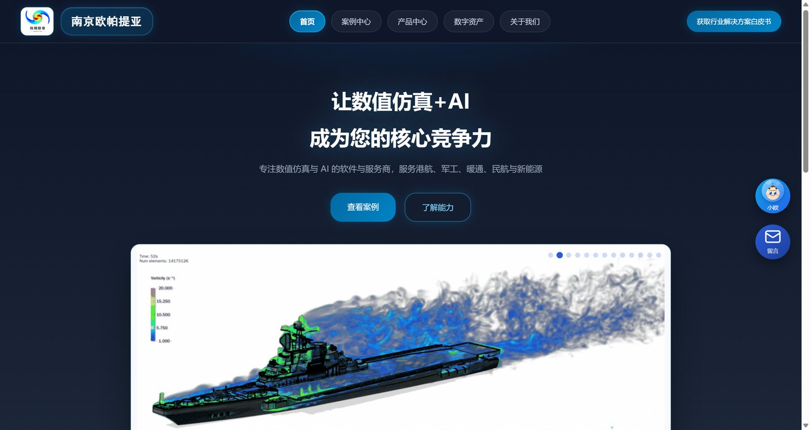
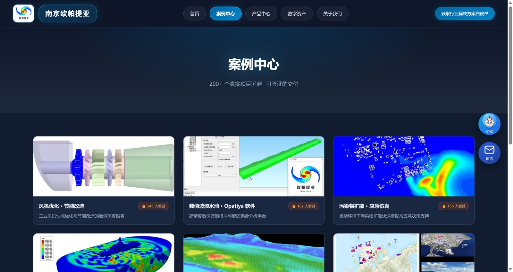
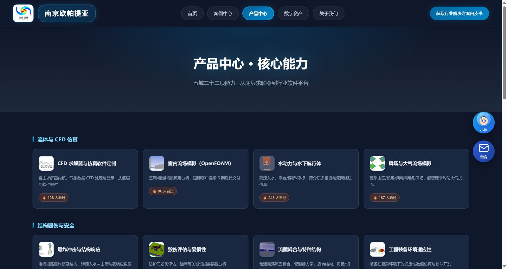

欧帕提亚官网 本地网站服务
南京欧帕提亚信息科技有限公司官方网站 —— 让数值仿真+AI 成为您的核心竞争力。
本网站是南京欧帕提亚信息科技有限公司的官方门户，面向细分行业提供 数值仿真 + AI 解决方案。站点由五个板块构成：首页、案例中心、 产品中心、数字资产与关于我们，并提供行业解决方案白皮书（PDF）。 网站以 Flask + waitress 本地服务形式常驻作者本机运行（Windows 登录自启动）， Jinja2 模板渲染、SQLite 数据存储，全部内容与数据在本机闭环，不出本机。 本页为网站介绍；网站本体仅在作者电脑上运行。

官网首页：主视觉标语与能力板块入口。站内现有案例、产品、数字资产等栏目均可在导航栏直达。
板块结构
五板块 · Flask + Jinja2 + SQLite + waitress · 登录自启动本地网站服务 · 数据不出本机
页面掠影

案例中心：按行业组织的工程案例列表。

产品中心：自研软件与工具链的能力介绍。
方法与说明
网站基于 Flask 应用工厂 + Jinja2 模板构建，使用 waitress 作为生产服务器在本机常驻； 业务数据存储于本地 SQLite 数据库，页面内容（案例、产品、白皮书等）由结构化数据模块渲染生成， 便于持续更新。站点不依赖外部云服务，全部内容在本机闭环运行。
兼容性说明：网站服务同时被个人主页软件列表收录；本介绍页与软件列表中的其他软件采用同一版式， 方便访客在不连接本机的情况下了解网站内容与结构。